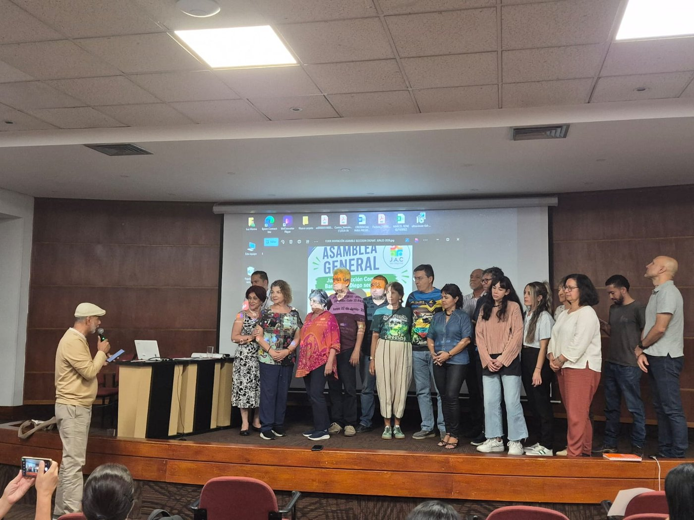
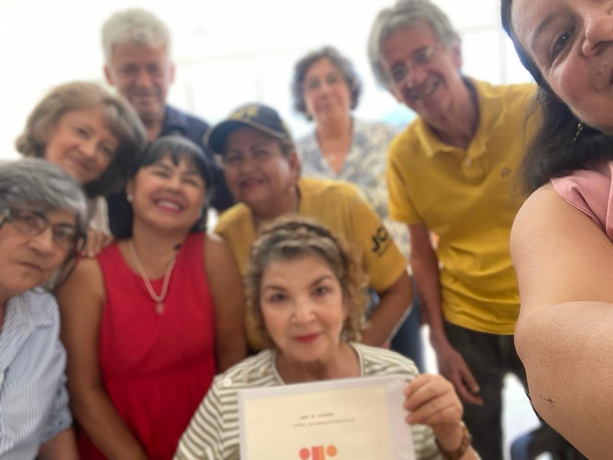
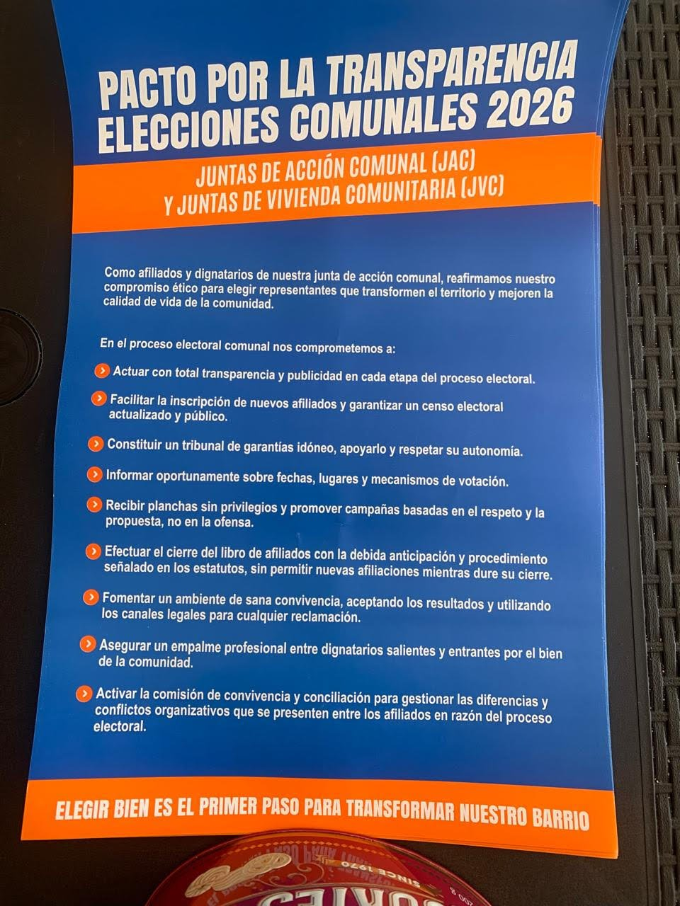
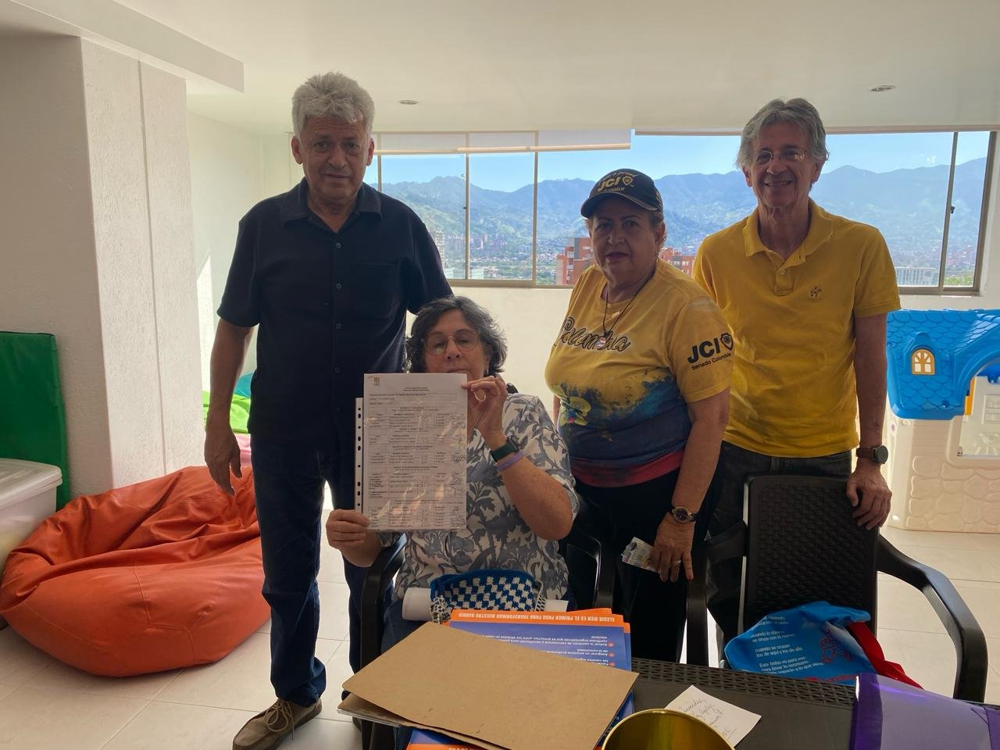

Somos una comunidad que decidió no resignarse al olvido, sino organizar la esperanza. Una junta nueva, nacida del encuentro de vecinos que quieren dejar de ser espectadores de su territorio para convertirse en sus guardianes.

Espacio publicitario destacado — disponible para comercios del sector.
Un sábado 9 de mayo, en el piso 11 de la Torre Norte del Centro Comercial San Diego, el sector se reunió para iniciar un nuevo ciclo. Afuera, Medellín seguía su prisa acostumbrada. Arriba, algo distinto comenzaba a moverse: un sector que aprendía a decir su nombre en voz alta.
Llegaron vecinos de todas las edades. Rostros curtidos por décadas de memoria y otros apenas estrenando la adultez. Muchos trajeron algo invisible: el cansancio de sentirse habitantes de un territorio muchas veces nombrado por otros, pero pocas veces escuchado.
Ese día se aprobó la constitución de la Junta de Acción Comunal del San Diego Sur. Se leyeron los estatutos, se conformó el Tribunal de Garantías, se nombraron dignatarios ad hoc, se abrió el libro de afiliados y se aprobó el camino hacia la afiliación a Asocomunal 10.

Los hitos del proceso de constitución, paso a paso.
La Alcaldía de Medellín, a través de la Secretaría de Participación Ciudadana, verificó y aceptó el polígono del radio de acción de la nueva Junta. Sin traslapes ni conflictos con otras juntas vecinas.
Se aprobó la constitución de la Junta, se leyeron los estatutos, se conformó el Tribunal de Garantías y se abrió el libro de afiliados.
Entrega de plancha y cierre del libro de afiliados ante el Tribunal de Garantías, dando paso al proceso electoral.
Asamblea General de elección. Juramento y aceptación de cargos de la Junta Directiva, bajo el Pacto por la Transparencia de las Elecciones Comunales 2026.
La Junta cuenta con cuatro comisiones creadas por la Asamblea General. Cada una atiende un frente distinto de la vida del sector.
Obras públicas, medio ambiente, gestión del riesgo, quebradas, parques, árboles, basuras, movilidad, vías y seguridad.
Participación, inclusión e igualdad de género: mujer, juventud, adultos mayores y personas con discapacidad.
Salud, recreación, deportes, artes y cultura. Programas y espacios para la comunidad.
Capacitación en derechos, participación comunitaria, proyectos productivos y economía solidaria.
Nuestro polígono fue verificado y aceptado por la Secretaría de Participación Ciudadana del Distrito de Medellín. Corresponde al perímetro de San Diego Sur · Comuna 10 — La Candelaria.
Carrera 43A con Calle 37 (Avenida 33), hacia el oriente hasta la Avenida Las Palmas.
Avenida Las Palmas hacia el sur, hasta la Calle 26.
Desde Las Palmas con Calle 26, al occidente por las calles 27 y 28 hasta la Carrera 43A.
Carrera 43A desde la Calle 28 hasta la Calle 37.
En Asamblea General se eligió la Junta Directiva. Los dignatarios tomaron juramento y aceptaron sus cargos.
Leer más →
La Junta se comprometió con un proceso electoral transparente: censo público, tribunal de garantías y respeto por los resultados.
Leer más →
Se hizo entrega de la plancha al Tribunal de Garantías y se cerró el libro de afiliados conforme a los estatutos.
Leer más →